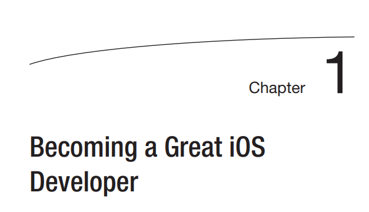
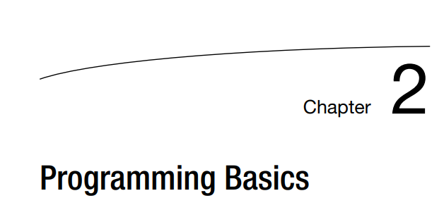

Convertirse en un gran iOS Desarrollador
Ahora que está listo para convertirse en desarrollador de software y ha leído la
introducción de
este libro, debe familiarizarse con varios conceptos clave. su programa de computadora
hará exactamente lo que le digas que haga, ni más ni menos. Seguirá la programación
reglas definidas por el sistema operativo y el lenguaje de programación Swift.
1- Responde las siguientes preguntas:
1- ¿Por qué es tan importante dedicar tiempo a los requisitos de los usuarios?
R// Es necesario empatizar con ellos,
entender sus
necesidades y problemas. Averigüemos cómo es su ambiente de trabajo, qué tipo de negocio tienen.
Solo sabiendo esto sabemos en qué escenario nos encontramos y podemos tomar decisiones que
aporten valor real a nuestro producto.
2- ¿Cuál es la diferencia entre los requisitos de diseño y un algoritmo?
R// Un algoritmo es un conjunto de
instrucciones
ordenadas, limitadas y limitadas diseñadas para describir sistemáticamente el desempeño de una
tarea.
Los algoritmos suelen usarse todos los días y se pueden encontrar en manuales de usuario,
instrucciones para ejecutar un plan o instrucciones sobre cómo realizar procesos. Sin embargo,
el uso de la expresión es más común en el campo de la programación.
Un programa es una secuencia lógica de instrucciones para realizar tareas específicas en una
computadora. Estas secuencias están escritas en código y diseñadas por programadores que
utilizan uno o más algoritmos.
La diferencia entre un algoritmo y un programa es que aunque ambos se refieren a un conjunto de
instrucciones, los algoritmos pueden escribirse en código o lenguaje natural, mientras que los
programas solo pueden escribirse en un lenguaje de programación.
Además, los algoritmos pueden ser controlados por humanos, mientras que los programas están
diseñados para ser controlados por máquinas.
3- ¿Cuál es la diferencia entre un método y una propiedad?
R//
Las propiedades son las características que definen un control, tanto el aspecto que presentara
ese control, como cualquier cosa que requiera para definirlo. Por ejemplo un botón de comando,
pues características suyas, ósea propiedades, pueden ser el tamaño, posición del
botón, el texto que incluye, color, y muchas mas cosas que en el fondo eso, definen el boton en
función. Puedes ponerle visible, invisible, bloqueado para que no se utilice imagínate que
aparece para que no se utilice, osea el típico control gris apagado que no puedes pinchar sobre
el. Y puedes hacer que después de determinados eventos o lo que sea, ese botón pase a cambiar su
propiedad lock para volverlo activo. Estas son las propiedades de un control, mientras que los
eventos y los métodos, son respuestas que se producen ante un determinado acto, por ejemplo al
pulsar el botón, se producirá un evento, una respuesta, por ejemplo click. . Más o menos
depende. Tengo más problemas con los eventos y los métodos.
4- ¿Qué es un error?
R// Un error de software, error o
simplemente un error (también conocido como error) es un problema en un programa informático o
sistema de software que provoca un resultado no deseado. En resumen, en el software, un error es
algo que no funciona como se esperaba.
5- ¿Qué es el estado?R// Hay dos
mecanismos para cambiar
acciones y modelos de estado: la matriz de transición de estado y la red de acción.
Una matriz de transición de estado representa el modelo de estado como una cuadrícula de hoja de
cálculo que enumera los estados tanto en el eje lateral como en el eje
superior.
6- Escribe un algoritmo sobre cómo funciona una máquina de refrescos desde el momento en que se
inserta una moneda hasta que se
se dispensa refresco. Suponga que el precio de un refresco es de 80 centavos.
7- Escriba los requisitos de diseño para una aplicación que ejecutará la máquina de refrescos
R//

Conceptos básicos de programación
Este capítulo se centra en los componentes básicos necesarios para convertirse en un gran Swift
programador.
Ejercicio
Digitando codigo
Amplíe su área de juegos agregando una línea de código que imprima cualquier texto de su elección
Todo se trata de los datos
Como probablemente sepa, los datos se almacenan como ceros y unos en la memoria de su computadora.
Sin embargo, los ceros y los unos no son muy útiles para los desarrolladores o usuarios de aplicaciones, por lo que debe
saber cómo su programa utiliza los datos y cómo trabajar con los datos que se almacenan.
Paso 5
OPeraciones
Haciendo operacion con un tipo de dato FLOAT
Paso 6
Operadores
Los mismos datos de suma, resta division y multiplicacion
Paso 6
Operadores
Los mismos datos de suma, resta division y multiplicacion
.png)